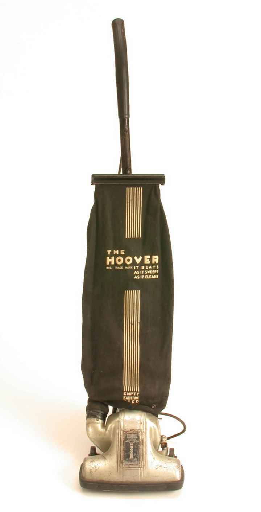
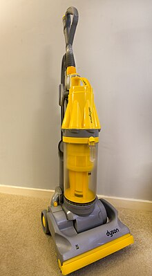

Nel 1978 James Dyson comprò un aspirapolvere Hoover Junior da Walmart. L'aspirapolvere Hoover si ostruiva e perdeva potenza di aspirazione velocemente. Frustrato, Dyson svuotava il sacchetto ripetutamente nel tentativo di ripristinare la potenza di aspirazione, ma senza risultato. Smontando l'aspirapolvere per capire quale fosse il problema, Dyson notò uno strato di polvere che ostruiva la fine trama del sacchetto dall'interno, impedendo alla macchina di funzionare correttamente. L'aspirapolvere funzionava correttamente solo con un sacchetto nuovo, ma poi perdeva potenza di aspirazione velocemente nel tempo.
Durante la visita ad una segheria locale, Dyson notò come la segatura venisse rimossa dall'aria tramite grandi filtri a ciclone. I filtri a ciclone (o filtri centrifughi) sono una tipica soluzione all'interno di impianti industriali quando si vuole mantenere l'aria pulita da sporco, polvere e detriti. Solitamente questi metodi non vengono utilizzati in sistemi più piccoli a causa dei costi elevati. Dyson ipotizzò di poter realizzare un aspirapolvere che utilizzasse lo stesso principio di funzionamento e così rimosse il sacchetto dal suo Hoover Junior e al suo posto installò un filtro a ciclone realizzato con del cartone. Dopo aver pulito la stanza con questo aspirapolvere modificato, Dyson notò che aveva raccolto più sporco e polvere dell'aspirapolvere originale. Quello che aveva appena realizzato era il primo aspirapolvere senza sacchetto.
Dyson sviluppò 5.127 prototipi dal 1979 al 1984, ma il primo aspirapolvere senza sacchetto ebbe un successo limitato: molte aziende, come Hoover, non volevano brevettare e sviluppare il design. Questo era probabilmente dovuto al fatto che il mercato legato alla vendita di sacchetti per aspirapolvere aveva un valore di $500 milioni e Dyson, con la sua idea rivoluzionaria, poteva rappresentare un freno ai profitti di queste grandi aziende.
La sola società interessata nella nuova tecnologia ad aspirazione ciclonica era un'azienda di cui James Dyson era dipendente, la Rotork. Costruito dall'italiana Zanussi e venduto dalla Kleeneze, il Kleeneze Rotork Cyclon è stato il primo aspirapolvere a tecnologia ciclonica venduto al pubblico. Solamente 500 unità vennero vendute nel 1983.
Nel 1985, l'azienda giapponese Apex Ltd., mostrò il suo interesse nel brevettare la tecnologia sviluppata da Dyson. Nel 1986 una versione rivisitata del Cyclon, chiamata G-Force, venne messa in produzione e venduta in Giappone al costo equivalente di $2000. Nel 1991, in Giappone, il G-Force vinse il premio International Design Fair e divenne uno status symbol.
Sempre nel 1991, utilizzando i profitti derivanti dal brevetto giapponese, James Dyson fondò la Dyson Appliances Ltd.. Il primo aspirapolvere a doppio-ciclone venduto con il nome Dyson, fu il DA 001: prodotto dall'azienda americana Phillips Plastics in una fabbrica a Wrexham (in Galles) a partire dal gennaio 1993 e venduto ad un costo di circa £200. Nei mesi successivi, James Dyson aprì un nuovo impianto a Chippenham, nel Wiltshire (Inghilterra) e il primo aspirapolvere venne completato il 1 luglio 1993. Il DA 001 venne presto rimpiazzato da un aspirapolvere pressoché identico, il DC01.
Anche se ricerche di mercato mostravano che le persone non avrebbero apprezzato un contenitore per la polvere trasparente, Dyson e il suo team decisero di dare credito a questa idea. Il contenitore per la polvere trasparente divenne presto molto famoso e molte aziende decisero di copiare questa idea. Il DC01 divenne l'aspirapolvere più venduto in tutto il Regno Unito in soli 18 mesi. Nel 2001, il solo DC01 rappresentava il 47% del mercato degli aspirapolveri verticali.
Successivamente, l'azienda introdusse il DC02 e produsse una serie di edizioni speciali e modelli rivisitati (DC02 Absolute, DC02 De Stijl, DC05, DC04, DC06, DC04 Zorbster). Il 2 gennaio 2001 il nome dell'azienda cambiò da Dyson Appliances Ltd. a semplicemente Dyson Ltd. Nell'aprile dello stesso anno, il DC07, un nuovo modello di aspirapolvere verticale, venne lanciato sul mercato. Questo modello utilizzava 7 filtri ciclonici anziché la tecnologia originale a doppio-ciclone.
Nel 2009, la Dyson iniziò a progettare e realizzare nuove tecnologie oltre all'aspirapolvere senza sacchetto: l'asciugamani AirBlade, il ventilatore senza pale Air Multiplier e il termoventilatore senza pale Dyson Hot.